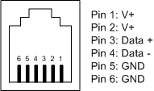
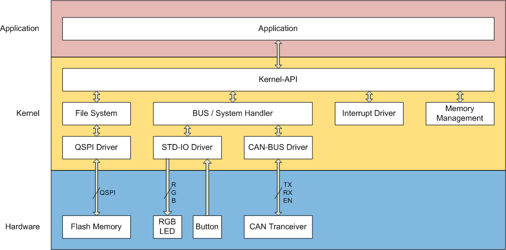

RoomBus
RoomBus is a CAN-FD based bus for room monitoring and control.
Key Features
- CAN-FD based
- Multi-master
- Up to 125 devices per line
Motivation
RoomBus was developed as a platform for room control and monitoring applications.
Inspiration
RoomBus was partially inspired by KNX. However, RoomBus is not intended as a replacement for KNX.
Terminology
| RoomBus | This whole project including the hardware and software layer. |
|---|---|
| Kernel | Part of the firmware that boots the system, handles communication and runs the application. |
| Application | The user application. |
| Node | One entity on the bus. |
| Frame | Unit of data on the data link layer. |
| Packet | Unit of data on the network layer. |
| Message | Unit of data on the application layer. |
Requirement Levels
Requirement levels are denoted in accordance with RFC2119.
Numbering Format
Numbers are represented in decimal format. A complementary representation in an hexadecimal or binary form can be added next to the decimal representation. e.g. 85 (55h / 01010101b).
Physical Layer
Connectors and Pinout
RoomBus devices should use a 6P6C modular connector (commonly, but incorrectly, often referred to as RJ-12 connector).
If using a 6P6C modular connector is not feasible in a particular application, a different connector may be used.
Pinout
In case the 6P6C modular connector is used, the following pinout must be used:
| Pin | Signal | Description |
|---|---|---|
| 1 | V+ | |
| 2 | V+ | |
| 3 | Bus + | |
| 4 | Bus - | |
| 5 | GND | |
| 6 | GND |
Bus Power
In case the 6P6C modular connector is used, the following specification must be obeyed:
Voltage: 24V DC +/- 20%
Maximum Current: 1A per bus line, 100mA per node
Data Link Layer
RoomBus uses CAN-FD with a 29-bit identifier at a fixed baud rate of 500k-baud.
Network Layer
RoomBus implements a network protocol on top of the CAN-FD identifier.
While the identifier is reserved for the network layer, the data part of the CAN-FD frame can be freely used by the application layer.
CAN-Identifier
| Bit | 28 | 27 | 26 | 25 | 24 | 23 | 22 | 21 | 20 | 19 | 18 | 17 | 16 | 15 | 14 | 13 | 12 | 11 | 10 | 9 | 8 | 7 | 6 | 5 | 4 | 3 | 2 | 1 | 0 |
|---|---|---|---|---|---|---|---|---|---|---|---|---|---|---|---|---|---|---|---|---|---|---|---|---|---|---|---|---|---|
| Data | Priority | Source Addresse | Destination Addresse | Protocol Id | Cmd | Length | |||||||||||||||||||||||
Priority
The priority field defines the priority of a frame on the bus.
As a result of the CAN-bus arbitration, a higher number will result in a lower priority.
Priority Levels
| Id | Priority | Description |
|---|---|---|
| 0 | Immediate | Reserved for alerts. Should not be used by applications. |
| 1 | High | For low-latency communication. |
| 2 | Normal | For normal communication. |
| 3 | Low | For file transfer, firmware updates and background tasks. |
Addressing
RoomBus supports an address range of 1 - 126.
Note:
- Address 0 (0h) is reserved as production default.
- Address 127 (7Fh) is reserved as broadcast address.
- A broadcast frame will be received and processed by all devices on the bus.
Protocol Id
The protocol id is a 6-bit (0-63) number that specifies the used application protocol.
Command (Cmd)
The use of this 3 bits is protocol specific.
Length
CAN-FD supports data lengths of 0 - 8, 12, 16, 20, 24, 32, 48 or 64 bytes while RoomBus supports 0 - 64 bytes.
The length field specifies the number of padding bytes to stuff the RoomBus packet length to a CAN-FD frame length.
Padding
CAN-Bus bit stuffing within the padding bytes must be avoided. 170 (AAh / 10101010b) should be used as a padding value.
Application Layer
Application Header
| Byte | Content | Description |
|---|---|---|
| 0 - 3 | CRC 32 | CRC of the application image |
| 4 - 7 | Image Size | Size of the application image |
| 8 | Major App Revision | Revision of the application |
| 9 | Minor App Revision | Revision of the application |
| 10-69 | Application Name | NULL terminated string. In case of 60 characters, NULL can be omitted |
| 70-73 | Application Main Address | Application main function entry point address |
| 74-77 | Application Data Received Address | Application data received function entry point address |
All multi-byte values are stored in little-endian (MSB first) order.
Administration Mode
The administration mode is a privileged mode that must be entered for system critical configuration changes on a device.
The administration mode can be activated by sending the “Enter Administration Mode” instruction or pressing the administration button on the device.
Entering the administration mode will trigger a "System Information" message.
Application Layer Protocol
The application layer defines protocols for handling different types of Applications.
| Id | Protocol | Description |
|---|---|---|
| 0 | Device Management Protocol | The Device Management Protocol provides a basic set of instructions to manage basic device function and to transfer software (Bootloader) and data (File System) to or from the device. |
| 1 | Sys Msg / Logging | Allows to send text based messages from the device to e.g. a logging server. |
| 2 | File Transfer Protocol | Allows to access the file system of the device. |
| 3-7 | Reserved for Kernel | |
| 8 | Trigger System Protocol | |
| 9 | Event System Protocol | The Event System Protocol is used to trigger and report actions on a device. |
| 10 | State Report Protocol | |
| 11 | Value Report Protocol | |
| 12 | Serial Bridge Protocol | Allowes serial comunication over the BUS |
| 13-62 | Reserved | |
| 63 | Protocol No. extension | Additional 8bits (following Byte) are added to the Protocol No. size. |
Protocol Conventions
Every application protocol should follow the following conventions if possible:
TBD
Device Management Protocol (ID 0x00)
The device management functionality must be completely implemented on all devices.
Commands
Instruction List
| Id | Instruction | Payload | Response |
|---|---|---|---|
| 0x00 | Heartbeat | Status | - |
| 0x01 | System Information | System Information | - |
| 0x02 | Hardware Name | String | - |
| 0x03 | Application Name | String | - |
| 0x04 | Device Name | String | - |
| 0x05 | Heartbeat request | Empty | Heartbeat |
| 0x06 | System Information Request | Empty | System Info + Hardware Name + Application Name + Device Name |
| 0x08 | Heartbeat Settings | Heartbeat parameter | - |
| 0x09 | Write Control | Control Byte | - |
| 0x0A | Set Control | Control Byte | - |
| 0x0B | Clear Control | Control Byte | - |
| 0x0C | Enter Administration Mode | Password | - |
| 0x0D | Set Device Name* | New Device Name | - |
| 0x0E | Set Address* | New Address | - |
| 0xF0 | Diagnostics Request | Empty | Diagnostics Report |
| 0xF1 | Diagnostics Report | Diagnostics Report | Empty |
| 0xFA | Echo | Echo Data | Echo |
| 0xFB | Reboot* | Empty | |
| 0xFC | Erase App* | Empty | |
| 0xFD | Erase App Response* | Empty | |
| 0xFE | Bootload* | Address + Data | Bootload Response |
| 0xFF | Bootload Response* | Address + Data Size | - |
*) The device must be in administration mode to execute these instructions.
Heartbeat (0x00)
A heartbeat messages will be sent periodically to signal the devices presence on the BUS. The Heartbeat message contains the Status Byte.
System Information
| Data | Data Type | Size |
|---|---|---|
| Status | 32-Bit Integer | 4 Byte |
| Hardware Version | Integer (Major Byte, Minor Byte) | 2 Byte |
| Kernel Version | Integer (Major Byte, Minor Byte) | 2 Byte |
| Heartbeat Interval | Integer | 2 Byte |
| Extended Heartbeat Interval | Integer | 2 Byte |
| App CRC | 32-Bit Integer | 4 Byte |
| App Start Address | 32-Bit Intege | 4 Byte |
| Device Id | 32-Bit Intege | 4 Byte |
| Device Serial Number Word 0 | 32-Bit Intege | 4 Byte |
| Device Serial Number Word 1 | 32-Bit Intege | 4 Byte |
| Device Serial Number Word 2 | 32-Bit Intege | 4 Byte |
| Device Serial Number Word 3 | 32-Bit Intege | 4 Byte |
Hardware Name / Application Name / Device Name (0x02 / 0x03 / 0x04)
The name is encoded as ASCII string. The length is limited to 60 characters.
The Name is not NULL terminated.
System Information Request (0x06)
The System Information request will trigger a Extended Heartbeat Package.
Heartbeat Settings (0x08)
The Heartbeat Settings define the interval Heartbeat messages are sent.
| Data | Description | Data Type | Size |
|---|---|---|---|
| Heartbeat Interval | Time in 1 second steps, 0 = off | 16-Bit Integer | 2 Byte |
| Extended Heartbeat Interval | Time in 10 second steps, 0 = off | 16-Bit Integer) | 2 Byte |
Messages
Status
| Bit | 31 | 30 | 29 | 28 | 27 | 26 | 25 | 24 |
|---|---|---|---|---|---|---|---|---|
| - | - | - | - | - | - | - | - | |
| Bit | 23 | 22 | 21 | 20 | 19 | 18 | 17 | 16 |
| - | - | - | - | - | - | - | - | |
| Bit | 15 | 14 | 13 | 12 | 11 | 10 | 9 | 8 |
| - | - | - | - | - | - | Watchdog Error | Watchdog Warning | |
| Bit | 7 | 6 | 5 | 4 | 3 | 2 | 1 | 0 |
| System Error Flag | - | Setup Mode Flag | Identify Flag | LEDs On /Off | Run App on startup | App CRC | App Running |
Control
| Bit | 31 | 30 | 29 | 28 | 27 | 26 | 25 | 24 |
|---|---|---|---|---|---|---|---|---|
| - | - | - | - | - | - | - | - | |
| Bit | 23 | 22 | 21 | 20 | 19 | 18 | 17 | 16 |
| - | - | - | - | - | - | - | - | |
| Bit | 15 | 14 | 13 | 12 | 11 | 10 | 9 | 8 |
| - | - | - | - | - | Force App Shutdown | Reboot System | Reboot App | |
| Bit | 7 | 6 | 5 | 4 | 3 | 2 | 1 | 0 |
| System Error Flag | - | - | Identify | LEDs On /Off | Run App on startup | Check App CRC | Run App |
Diagnostics Request (0xF0)
Diagnostics Report (0xF1)
| Data | Data Type | Size |
|---|---|---|
| Bus Error Counter | 24-Bit Integer | 3 Byte |
| Last Error Code | Byte | 1 Byte |
| App Time (Avg [us]) | 32-Bit Integer | 4 Byte |
| App Time (Min [us]) | 32-Bit Integer | 4 Byte |
| App Time (Max [us]) | 32-Bit Integer | 4 Byte |
Echo (0xFA)
The Echo Instruction will return a received payload back to the sender.
The intended use case for this instruction is to test the connection between devices.
Reboot* (0xFB)
This instruction will shutdown the app and restart the device.
Erase App* (0xFC)
This command will stop the execution of the application and erase the application section in the device memory.
Erase App Response* (0xFD)
This instruction will be sent by the device after the erasing process is completed.
Bootload Write* (0xFE)
This istruction code is used to send the application image to the device.
| Data | Data Type | Size |
|---|---|---|
| Address Offset | 32-Bit Integer | 4 Byte |
| Data | n Byte | 0 - 2 Byte |
Bootload Response* (0xFF)
Once a Bootload Write instruction is completed, theis reponce will be sent.
| Data | Data Type | Size |
|---|---|---|
| Address Offset | 32-Bit Integer | 4 Byte |
| Number of bytes written | Byte | 1 Byte |
System Message and Logging Protocol (ID 0x01)
This protocol allows to send text messages for logging and diagnostic purposes from the device.
Commands
Payload
Byte 0 - 1 is reserved. Those bytes must be set to 0.
Byte 2 - 63 can be used for the message.
| Byte | 0 | 1 | 2 ... 63 | |||||||||||||||
|---|---|---|---|---|---|---|---|---|---|---|---|---|---|---|---|---|---|---|
| Data | Reserved | Message | ||||||||||||||||
File Transfer Protocol (ID 0x02)
Commands
Command (0x00)
| Code | Name | Payload | Response | Description |
|---|---|---|---|---|
| 0x00 | List content | Path | File Info | |
| 0x01 | Get space Information | Path | Not implemented | |
| 0x02 | Get File Information | Path | Not implemented | |
| 0x08 | Make File | Path | ||
| 0x09 | Delete File | Path | ||
| 0x20 | Start File Read | Path | ||
| 0x21 | End File Read | Path | ||
| 0x30 | Start File Write | Path | ||
| 0x31 | End File Write | Path |
Response (0x01)
| Code | Name | Payload | Description |
|---|---|---|---|
| 0x00 | File Info | File Info | |
| 0x20 | Start File Read Acknowledgment | Path | |
| 0x30 | Start File Write Acknowledgment | ||
| 0x31 | Complete File Write Acknowledgment |
File Info Response
| Byte | ||||||||
|---|---|---|---|---|---|---|---|---|
| 0 | 1 | 2 | 3 | 4 | 5 | 6 | 7-57 | 58-62 |
| Code (0x00) | Status | Type | File Size | Path | Reserved | |||
Status
| Code | Name | Description |
|---|---|---|
| 0x00 | ftp_rsps_ok | |
| 0x01 | ftp_rsps_pathInvalid | |
| 0x20 | ftp_rsps_writeSuccessful | |
| 0x21 | ftp_rsps_writeCrcError | |
| 0x22 | ftp_rsps_writeSequencingError | |
| 0x30 | ftp_rsps_readSuccessful | |
| 0x31 | ftp_rsps_readCrcError | |
| 0x32 | ftp_rsps_readSequencingError |
Data Transfer from Device (0x04) / Data Transfer to Device (0x06)
| Byte | ||||
|---|---|---|---|---|
| 0 | 1 | 2 | 3 | 4-n |
| Data Offset | Data | |||
From Device Acknowledgment (0x05) / To Device Acknowledgment (0x07)
| Byte |
|---|
| 0 |
| Status |
Event System Protocol (ID 0x09)
Commands
Event Slot (0x00)
The event slot message contains a list channels of currently active events.
| Byte |
|---|
| n |
| Event Channel Number |
Event Signal Name Reporting (0x01)
| Byte | ||
|---|---|---|
| 0 | 1 | 2-n |
| Destination Address | Event Channel Nr | Channel Name |
Event Slot Name Reporting (0x02)
| Byte | ||||
|---|---|---|---|---|
| 0 | 1 | 2 | 3 | 4-n |
| Source Address | Event Channel Nr | Timeout | Channel Name | |
Event Signal Name Request (0x03) / Event Slot Name Request (0x04)
| Byte |
|---|
| n |
| Event Channel Number |
Event Timeout Reset Request (0x05)
This command resets the event repetition timeout counter. All currently active events will be reported.
| Byte | ||||
|---|---|---|---|---|
| 0 | 1 | 2 | 3 | 4-n |
| Source Address | Event Channel Nr | Timeout | Channel Name | |
Trigger System Protocol (ID 0x08)
Commands
Trigger Slot (0x00)
| Byte |
|---|
| n |
| Trigger Channel Number |
Trigger Signal Name Reporting (0x01)
| Byte | ||
|---|---|---|
| 0 | 1 | 2-n |
| Destination Address | Event Channel Nr | Channel Name |
Trigger Slot Name Reporting (0x02)
| Byte | ||||
|---|---|---|---|---|
| 0 | 1 | 2 | 3 | 4-n |
| Source Address | Event Channel Nr | Timeout | Trigger Channel Name | |
Trigger Signal Name Request (0x03) / Trigger Slot Name Request (0x04)
| Byte |
|---|
| n |
| Trigger Channel Number |
State Report Protocol (ID 0x0A)
Commands
Group 0 Report (0x00) / (0x01)
| Byte | ||
|---|---|---|
| n | ||
| Bit | 7:4 | 3:0 |
| Channel 0+n*2 | Channel 1+n*2 | |
State
| Code | Name | Description |
|---|---|---|
| 0 | Off | |
| 1 | On | |
| 2 | Transitioning | State is transitioning from On to Off |
| 3 | Undefined / Error | State is unclear or error |
Value Report Protocol (ID 0x0B)
Value Reporting (0x00)
| Byte | |||||
|---|---|---|---|---|---|
| 0 | 1 | 2-5 | |||
| Bit | 7:0 | 7:4 | 3:0 | 7:0 | |
| Channel Nr | Data Type | Value | |||
Value Command (0x01)
| Byte | |||||
|---|---|---|---|---|---|
| 0 | 1 | 2-5 | |||
| Bit | 7:0 | 7:4 | 3:0 | 7:0 | |
| Channel Nr | Data Type | Value | |||
Commands
| Index | Description | Has Data |
|---|---|---|
| 0 | Set value to minimum | - |
| 1 | Set value to maximum | - |
| 2 | Invert / Complement | - |
| 3 | Set to value x | x |
| 4 | Add int 8 x | x |
| 5 | Add int 16 x | x |
| 6 | Add int 32 x | x |
| 7 | Add int 64 x | x |
| Bitweise AND | ||
| Bitweise OR | ||
| Bitweise XOR | ||
| Bitweise Invert |
Meta Data Reporting (0x02)
| Byte | |||||
|---|---|---|---|---|---|
| 0 | 1 | 2-5 | 6-9 | 10-n | |
| 7:0 | 7 | 6:0 | 7:0 | 7:0 | 7:0 |
| Channel Nr | RO | UoM | Min Value | Max Value | Name |
Value Request (0x03) / Meta Data Request (0x04)
If no channel number is specified, a report for all channels is returned
| Byte | n |
|---|---|
| Channel Nr |
Serial Bridge Protocol (ID 0x0C)
Commands
Data (0x00) OLD
| Byte | ||||||||
|---|---|---|---|---|---|---|---|---|
| 0 | 1 | 2 | 3 | 4 | 5 | 6 | 7 | 8-n |
| Source Port No | Destination Port No | Data | ||||||
Data (0x00)
| Byte | ||||||||
|---|---|---|---|---|---|---|---|---|
| 0 | 1 | 2-n | ||||||
| Port | Status | Data | ||||||
Port Info Report (0x04)
| Byte | |
|---|---|
| 0 | 1-n |
| Number of Ports | Port Information |
Port Information
| Code | Type | Description |
|---|---|---|
| 0x00 | UART (Serial Port) | |
| 0x01 | I2C |
Port Info Request (0x05)
This command will return a list of available ports. The Data field is empty.
Datatypes
The following sections will explain what data types can be used in the protocol and how the data is formatted.
| Name | C++ equivalent | Description | Encoding |
|---|---|---|---|
| Bool | Bool | True or False | True -> 0x01, False -> 0x00 |
| String | String | ANSI String | Hallo Welt < NULL > |
| Integer | Unsigned Int | A unsigned 16 bit number | <H Byte><L Byte> |
| Byte | Unsigned Char | A unsigned 8 bit number | <Byte> |
| sInteger | Signed Int | A signed 16 bit number | <H Byte><L Byte> |
| sByte | Signed Char | A signed 8 bit number | <Byte> |
| Number | float | A 32-Bit floating point number | <MSB Byte><2. Byte><3. Byte><LSB Byte> |
Setup Mode
The Setup Mode is used to set the Address of a Device. The Setup Mode can be entered ether by a command over the Device Management Protocol or by a physical interaction with the Hardware (Usually press of a Button).
The Device Address can only be changed if the device is in Setup Mode.
After entering Setup Mode a Heartbeat massage will be send, were the Setup Mode Flag is set. After a new Address is received, the devise will automatically leave the Setup Mode and reboot.
Unit of Measurements
| UoM Code | Symbol | Description | Data Type | Size [Byte] | Note |
|---|---|---|---|---|---|
| 0x00 | Raw Data | uint32 | 4 | ||
| 0x01 | Digital I/O | Boolean | 1 | 0x00 Off, 0x01 On, 0x02 Transitioning | |
| 0x02 | Absolute Time | uint32 | 4 | Unix time as 32 bit unsigned int | |
| 0x03 | s | Relative Time | Float | 4 | |
| 0x04 | °C | Temperature | Float | 4 | |
| 0x05 | % | Rel. Humidity | Float | 4 | |
| 0x06 | kPa | Pressure | Float | 4 | |
| 0x07 | V | Voltage | Float | 4 | |
| 0x08 | A | Current | Float | 4 | |
| 0x09 | W | Power | Float | 4 | |
| 0x0A | Power Factor | Float | 4 | ||
| 0x0B | Hz | Frequency | Float | 4 | |
| 0x0C | kWh | Energy | Float | 4 | |
| 0x0D | Ω | Resistance | Float | 4 | |
| 0x0E | F | Capacitance | Float | 4 | |
| 0x0F | N | Force | Float | 4 | |
| 0x10 | kg | Weight | Float | 4 | |
| 0x11 | m | Length | Float | 4 | |
| 0x12 | m/s | Speed | Float | 4 |
Led Color Codes
Firmware Header
| Byte | Content | Description |
|---|---|---|
| 0 - 3 | CRC 32 | CRC of the application image |
| 4 - 7 | Image Size | Size of the application image |
| 8 | Major App Revision | Revision of the application |
| 9 | Minor App Revision | Revision of the application |
| 10-69 | Application Name | NULL Terminated String. Max 60 Characters including NULL |
| 70-73 | Application Main Address | Application Main function entry point address |
| 74-77 | Application Data Receive Address | Application Data Receive function entry point address |
OLD
Topology
The TinyBus is a strictly master-slave, request-response based protocol.
TinyBus is conceived to be single-master, however, multi-master operation is technically feasible.
Addressing
The TinyBus supports up to 14 individually addressable devices.
Additionally, all nodes can be commanded simultaneously via a broadcast address.
Baud Rates
Each TinyBus node must support auto-baud detection. Therefore, there is no strict specification for supported baud rates.
However, the master node (which defines the baud rate on the bus) should preferably use standard baud rates.
Limitations
Empirical testing has shown that the highest realistically achievable standard baud rate is 14'400 baud
This was tested over multiple meters of cabling in a tree topology.
Idle state, power conservation and node wake-up
In idle state, the bus is logical high. This allows a node to detect if it is currently connected to the bus and if the bus is active.
If a node is disconnected or the bus becomes inactive, the node can enter standby or power down.
Wake-Up Signal
The "RX_RAW" signal (see Interface) can be used as wake-up signal.
The output of the optocoupler being open-collector and not reliant on any auxiliary voltage supply allows for a true zero standby power consumption design.
Interface

The above diagram shows the reference implementation of the interface of a TinyBus node.
Schematic Explanation
Note: Some of the components serve multiple purposes and are therefore reverenced multiple times.
R1, R2, D1, C1 - Protection and filtering
D1 is a transient surge arrestor. It will clamp short voltage spikes above approximatly 25V and thereby protects the following circuit.
R1, R2 and C1 form a low pass filter. It dampens the high-frequency content of the signal, thereby reducing conducted electromagnetic interference (EMI).
D2, D3 - Full Bridge Rectifier
D2 and D3 form a full bridge rectifier. This enables the polarity agnosticity of the TinyBus interface.
T1, R1,R2, R4, R5, IC2 - Transmitter
T1 in combination with IC2 forms the transmitter part of the interface.
R1 and R2 limit the maximum sink current of the transmitter.
R3, D2, D3, D4, IC1 - Receiver
D2, D3, D4 and the LED of IC1 have a combined forward voltage of approximately 7.7V. This value represents the threshold between a logical high and a low. R3 limits the forward current of IC1s LED to about 6mA.
Connectors and Pinout
TinyBus devices should use a 4P4C or 4P2C modular connector (commonly, but incorrectly, often referred to as RJ-10 connector).
For a bus-powered device the 4P4C modular connector must be used. For a not bus-powered device the 4P2C modular connector should be used.
This allows for easy identification of bus-powered and not bus-power devices by examining the connector.
Bus Power
Voltage: TBD
Max Current: TBD
Pinout
In case the 4P4C or 4P2C modular connector is used, the follwing pinout must be followed:
| Pin | Signal | Description |
|---|---|---|
| 1 | V- / GND | Optional, for bus powerd devices |
| 2 | Bus - | |
| 3 | Bus + | |
| 4 | V+ | Optional, for bus powered devices |
Data Link Layer
Framing
Both, the request and response, use the same frame format.
The framing is based on a modified version of the "Consistent Overhead Byte Stuffing" (COBS) algorithm. To enable auto baudrate detection, instead of 0 (0h), 85 (55h / 01010101b) is used as delimiter.
Each frame starts and ends with the delimiter byte.
Per packet, a maximum payload size of 20 bytes shall not be exceeded. Therefore, the maximum total frame lenght is 26 bytes.
| Data Link Layer (Frame) | ||||||
| Start Byte(0x55) | Overhead Byte | Instruction Byte | Payload | CRC16(High Byte) | CRC16(Low Byte) | End Byte(0x55) |
| Network Layer (Packet) | ||||||
Acknowledgment
Each frame sent to a specific device must be acknowledged. Broadcast frames shall not be acknowledged.
The acknowledgment frame is constructed the same way as a regular data frame.
The instruction byte shall be the same as it was in the request. If there is no data to be returned, the payload shall be left empty.
Non-Acknowledgment
If an error is detected in the received frame or during the execution of the request a non-acknowledgment should be returned.
A non-acknowledgment uses the same frame format as an acknowledgment with the exception that the CRC shall be set to 0.
CRC
The CRC16 uses an x16 + x12 + x5 + 1 polynomial (0x1021) initialized to 0xFFFF.
The CRC calculation includes the data contained in a network layer packet, namely the instruction byte and the payload bytes. The start-byte and stop-byte as well as the overhead-byte are not included in the CRC calculation.
Automatic Baud Rate Detection
The bus baud rate is automatically detected based on the COBS delimiter byte (55h / 01010101b).
The supported baud rates shall not be limited to standard baud rates.
The baud rate detection may be done only once at device startup and does not need to be repeted for each frame.
Network Layer
Each packet contains an instruction and a payload.
| Network Layer (Packet) | |
| Instruction Byte | Payload |
| Application Layer (Message) | |
Instruction Byte
| Instruction Byte | |||||||
|---|---|---|---|---|---|---|---|
| Address (Upper Nibble) | Command (Lower Nibble) | ||||||
The instruction byte is split into two parts: the address (upper nibble) and the command (lower nibble).
Addressing
The 4-bit address range allows for addresses between 0 (0h) and 15 (Fh).
- 15 (Fh) is reserved as a broadcast address and cannot be used as an individual device address.
- 0 (0h) is the default address of an unconfigured device and should not be used in an installation.
The remaining address range of 1 (1h) to 14 (Eh) can be assigned freely.
Commands
The command ids 0-14 (0h-Eh) are application specific. For details on those commands see the respective application documentation.
The command 15 (Fh) is reserved for kernel communication.
| Command Id | Command | Payload | Reply (1) |
|---|---|---|---|
| 0-14 | Application Specific | Application Specific | Application Specific |
| 15 | Kernel Commands | Subcommand Specific | Subcommand Specific |
1) Only if individual addressed, broadcast messages get no reply.
Application Layer
Starting the application
The application will only start if the application CRC is valid.
Application Autostart Disabled
The device will not run the application until either the "Start App" kernel command or a command other than a kernel command (Command Id 15) is received. Any application command (Command Id 0-14) will start the application.
Application Autostart Enabled
The device will run the application automatically as soon as the device is powerd-on.
In case a device reset is triggered due to a watchdog timeout, division-by-zero error, or similar the application should not autostart.
Stopping the application
To stop the execution of the application the "Stop App" kernel command can be sent.
Application Header
| Bit | 7 | 6 | 5 | 4 | 3 | 2 | 1 | 0 | |
|---|---|---|---|---|---|---|---|---|---|
| Byte | |||||||||
| 0 | Autostart | Reserved | Header Version | ||||||
| 1 | Reserved | ||||||||
| 2 | Major Firmware Version | ||||||||
| 3 | Minor Firmware Version | ||||||||
| 4 | Hardware Id (High) | ||||||||
| 5 | Hardware Id (Low) | ||||||||
| 6 | Major Hardware Version | ||||||||
| 7 | Minor Hardware Version | ||||||||
| 8-13 | Reserved | ||||||||
| 14-31 | Application Name | ||||||||
Autostart
If this bit is set, the application starts automatically on power-up
Minor Version
Major Version
Application Name
Kernel Communication
Each kernel command message is composed of a subcommand id and a payload.
| Application Layer (Message) | |
| Kernel Subcommand Id | Payload |
Note: In the response the most signifcant bit of the sub command id is set.
Subcommands
| Id | Name | Payload | Reply |
|---|---|---|---|
| 0 | Get Device State | Empty | Device State |
| 1 | Get Hardware Information | Empty | Hardware Information |
| 2 | Get Memory Information | Empty | Memory Information |
| 3 | Get App CRC | Empty | CRC of app sector |
| 4 | Erase App Section | Empty | Acknowledgment |
| 5 | Write Page | Write Address + Data | Acknowledgment |
| 6 | Write EEPROM | Page Address + Page Data | Acknowledgment |
| 7 | Read EEPROM | Byte Address + Read Size | EEPROM Data |
| 8 | Read RAM | Byte Address + Read Size | RAM Data |
| 10 | Reboot | Empty | None |
| 11 | Start App | Empty | Acknowledgment |
| 12 | Stop App | Empty | Acknowledgment |
| 13 | Get Application Name | Empty | Application Name |
| 14 | Get Application Version | Empty | Application Version |
| 15 | Set Address | New Address | Acknowledgment |
Command 0x00 - Get Device State
| Payload | Empty |
|---|---|
| Reply | Device State / non-acknowledgment |
| Error Handling | If the command exicution fails, a non-acknowledgment will be replied. |
This command will return a device state message.
Device State Message
| Index | Data | Size in Bytes | Description |
|---|---|---|---|
| 0:7-4 | Device Address | 0.5 | The address of the device |
| 0:3-0 | Device State | 0.5 | The state of the device |
Device State
The device state is a 4 bit number, representing the current state of the device.
| Index | State | Description |
|---|---|---|
| 0 | Unknown | The current device state is unknown |
| 1 | Checking CRC | The CRC calculation is currently running |
| 2 | CRC error | The application CRC is invalid |
| 3 | Application start | The application is starting |
| 4 | Application running | The application is running |
| 5 | Application shutdown | The application is shutting down |
| 6 | Application stopped | The application is stopped |
| 7 | Reserved |
Command 0x01 - Get Hardware Information
| Payload | Empty |
|---|---|
| Reply | Hardware Information / non-acknowledgment |
| Error Handling | If the command exicution fails, a non-acknowledgment will be replied. |
This command will return the hardware information table.
Hardware Information
| Index | Data | Size in Bytes | Description |
|---|---|---|---|
| 0-1 | Controller Id | 2 | Controller Id. See Processor Id Table |
| 2-3 | Hardware Id | 2 | |
| 4 | Major Hardware Revision | 1 | |
| 5 | Minor Hardware Revision | 1 | |
| 6 | Major Kernel Revision | 1 | |
| 7 | Minor Kernel Revision | 1 |
Command 0x02 - Get Memory Information
| Payload | Empty |
|---|---|
| Reply | Memory Information / non-acknowledgment |
| Error Handling | If the command exicution fails, a non-acknowledgment will be replied. |
This command will return the memory information table.
Memory Information
| Index | Data | Size in Bytes | Description |
|---|---|---|---|
| 0-1 | Flash size | 2 | Flash size in bytes |
| 2-3 | Application start | 2 | Flash application sector start address in bytes |
| 4 | Flash Page Size | 1 | Size of one flash page in bytes |
| 5-6 | RAM Size | 2 | Size of the RAM in bytes |
| 7-8 | RAM application start | 2 | RAM application sector start address |
| 9-10 | EEPROM Size | 2 | Size of the EEPROM in bytes |
| 11-12 | EEPROM application start | 2 | EEPROM application sector start address |
Command 0x03 - Get Application CRC
| Payload | Empty |
|---|---|
| Reply | CRC of the application flash section / non-acknowledgment |
| Error Handling | If the command exicution fails, a non-acknowledgment will be replied. |
This command will calculate the CRC of the application memory section and return it.
Command 0x04 - Erase App Section
| Payload | Empty |
|---|---|
| Reply | Acknowledgment |
| Error Handling | If the command exicution fails, a non-acknowledgment will be replied. |
This command will erase the application sector of the target device. If the application is running, it will be stopped. After the erasing process is successfully completed, the target device will reply with an acknowledgment. If the erasing process fails, the target will reply with a non-acknowledgment.
Command 0x05 - Write Page
| Payload | Page Address + Page Data |
|---|---|
| Reply | Acknowledgment |
| Error Handling | If the command exicution fails, a non-acknowledgment will be replied. |
The application image is transferred in 16-Byte junks. Shorter frames must be padded with 255 (FFh).
| Byte | 0 | 1 | 2 | 3 | 4 | 5 | 6 | 7 | 8 | 9 | 10 | 11 | 12 | 13 | 14 | 15 | 16 | 17 |
|---|---|---|---|---|---|---|---|---|---|---|---|---|---|---|---|---|---|---|
| Data | 16 Bit Word Address | Databyte 0 - 15 | ||||||||||||||||
Command 0x06 - Write EEPROM
| Payload | Address + Data |
|---|---|
| Reply | Acknowledgment |
| Error Handling | If the command exicution fails, a non-acknowledgment will be replied. |
The EEPROM data can be transferred in 1 - 16 byte junks. Unused bytes shall not be transmitted.
| Byte | 0 | 1 | 2 | 3 | 4 | 5 | 6 | 7 | 8 | 9 | 10 | 11 | 12 | 13 | 14 | 15 | 16 | 17 |
|---|---|---|---|---|---|---|---|---|---|---|---|---|---|---|---|---|---|---|
| Data | 16 Bit Byte Address | Databyte 0 - 15 | ||||||||||||||||
Command 0x07 - Read EEPROM
| Payload | Address + Size |
|---|---|
| Reply | EEPROM Data |
| Error Handling | If the command exicution fails, a non-acknowledgment will be replied. |
The EEPROM data can be requested in 1-16 byte junks. Unused bytes shall not be transmitted.
| Byte | 0 | 1 | 2 |
|---|---|---|---|
| Data | 16 Bit Address | Size | |
Reply
| Byte | 0 | 1 | 2 | 3 | 4 | 5 | 6 | 7 | 8 | 9 | 10 | 11 | 12 | 13 | 14 | 15 |
|---|---|---|---|---|---|---|---|---|---|---|---|---|---|---|---|---|
| Data | Databyte 0 - 15 | |||||||||||||||
Command 0x08 - Read RAM
| Payload | Address + Size |
|---|---|
| Reply | RAM Data |
| Error Handling | If the command exicution fails, a non-acknowledgment will be replied. |
The RAM data can be requested in 1-16-Byte junks. Unused bytes shall not be transmitted.
| Byte | 0 | 1 | 2 |
|---|---|---|---|
| Data | 16 Bit Address | Size | |
Reply
| Byte | 0 | 1 | 2 | 3 | 4 | 5 | 6 | 7 | 8 | 9 | 10 | 11 | 12 | 13 | 14 | 15 |
|---|---|---|---|---|---|---|---|---|---|---|---|---|---|---|---|---|
| Data | Databyte 0 - 15 | |||||||||||||||
Command 0x0A - Reboot
| Payload | Empty |
|---|---|
| Reply | None |
| Error Handling | If the command exicution fails, a non-acknowledgment will be replied. |
This command will restart the device. This should be accomplished via a hardware reset of the device. If a hardware-reset can not be triggered via software, it is sufficient to jump to the boot vector of the device.
Note: The application will not be shutdown! Peripherals may stay initialized.
Command 0x0B - Start App
| Payload | Empty |
|---|---|
| Reply | Acknowledgment |
| Error Handling | If the command exicution fails, a non-acknowledgment will be replied. |
This command will verify the CRC of the application and, in case of a valid CRC, start the application.
Command 0x0C - Stop App
| Payload | Empty |
|---|---|
| Reply | Acknowledgment |
| Error Handling | If the command exicution fails, a non-acknowledgment will be replied. |
This command will shutdown the application.
Command 0x0D - Get Application Name
| Payload | Empty |
|---|---|
| Reply | Application Name |
| Error Handling | If the command exicution fails, a non-acknowledgment will be replied. |
In case of a valid CRC, this command will return the application name. Otherwise, a non-acknowledgment is returned.
The application name lenght can be between 1-18 bytes. Unused bytes are not transmitted.
Reply
| Byte | 0 | 1 | 2 | 3 | 4 | 5 | 6 | 7 | 8 | 9 | 10 | 11 | 12 | 13 | 14 | 15 | 16 | 17 |
|---|---|---|---|---|---|---|---|---|---|---|---|---|---|---|---|---|---|---|
| Data | Application Name | |||||||||||||||||
Command 0x0E - Get Application Version
| Payload | Empty |
|---|---|
| Reply | Application Version |
| Error Handling | If the command exicution fails, a non-acknowledgment will be replied. |
In case of a valid CRC, this command will return the application version. Otherwise, a non-acknowledgment is returned.
Reply
| Byte | 0 | 1 |
|---|---|---|
| Data | Major Firmware Revision | Minor Firmware Revision |
Command 0x0F - Set Address
| Payload | New Address |
|---|---|
| Reply | Acknowledgment |
| Error Handling | If the command exicution fails, a non-acknowledgment will be replied. |
This command changes the current device address to a new address.
Valid addresses are 1-14 (01h - 0Eh)
Note: The address change will become effective after a device reboot.